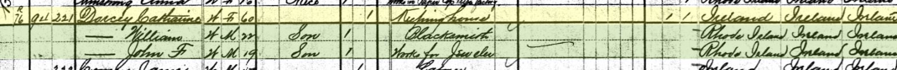

1880 U.S. census: the widow Catharine Darcy and her sons, 76 Borden Street, Providence
1880 United States Federal Census, Providence, Providence County, Rhode Island, district 28, page 21 (Ancestry collection 6742, record 22297599, image 4244436-00333; NARA T9)

The original record, as it appears in the register or index.
What this document is
The United States census. A census taker went door to door and wrote down every person in each household, with age, birthplace and work.
What it says
1880 census, Providence, enumerated June 9, 1880 (district 28, page 21); 76 Borden Street, dwelling 94, family 221. Written on the page as Darcy (Ancestry indexes it as Dorcey). Catharine Darcy, head, 60, white, female, widowed, keeping house, cannot read or write; born Ireland, both parents born Ireland. William, son, 22, single, blacksmith, born Rhode Island. John F., son, 19, single, works for jeweler, born Rhode Island; father and mother born Ireland. Her husband John Darcy, the blacksmith of 1860 and 1875, had died by 1880. Five years later John F. Darcy’s first wife Ellen died at 78 Borden Street, two doors away.
Place
76 Borden Street, Providence, Rhode Island
How it was read
proven